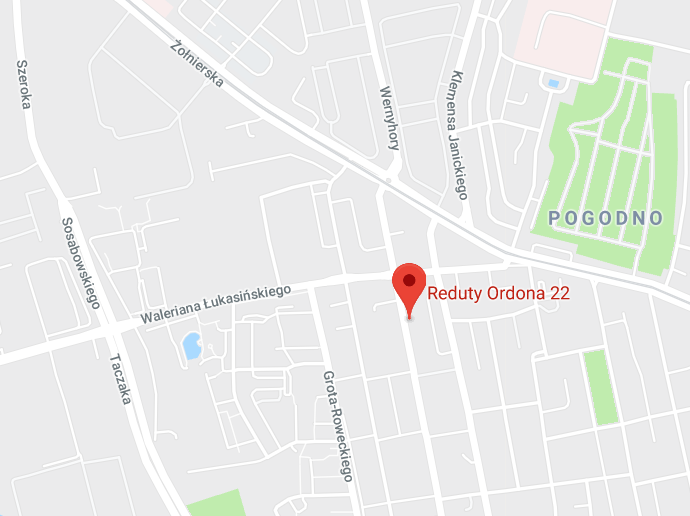

- Witam, nazywam się Małgorzata Mokrzycka. Jestem pediatrą
- i gastroenterologiem. Pracuję w Klinice Pediatrii, Hemato-Onkologii
- i Gastroenterologii Dziecięcej Pomorskiego Uniwersytetu Medycznego
- w Państwowym Szpitalu Klinicznym Nr 1 w Szczecinie.
- Od ponad 25 lat zajmuję się chorobami przewodu pokarmowego
- u dzieci w ramach pracy w oddziale, poradni i pracowni endoskopowej.
- Jestem członkiem Polskiego Towarzystwa Pediatrycznego, Polskiego
- Towarzystwa Gastroenterologii oraz Polskiego Towarzystwa
- Gastroenterologii, Hepatologii i Żywienia Dzieci. Udzielam konsultacji
- z zakresu pediatrii i gastroenterologii. Posługuję się językiem angielskim.
- * Proszę o kontakt telefoniczny po godzinie
- 16:00 lub wiadomość sms - oddzwonię.
mokrzycka.mal@gmail.com
- Indywidualna Specjalistyczna
- Praktyka Lekarska dr n. med.
- Małgorzata Mokrzycka
- Reduty Ordona 22/1, 71-202 Szczecin,
- województwo zachodniopomorskie
-
- Godziny przyjęć : Wtorek 16:00-20:00
